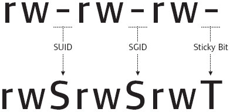

In Linux, SUID (set owner userId upon execution) is a special type of >file permission given to a file. SUID gives temporary permissions to a >user to run the program/file with the permission of the file owner (rather >than the user who runs it). {TryHackme}
For example, the binary file to change your password has the SUID bit set on it (/usr/bin/passwd). This is because to change your password, it will need to write to the shadowers file that you do not have access to, root does, so it has root privileges to make the right changes.
Let’s try to understand what SUID, SGID and the Stickly bits mean:
SUID bit:
SGID bit:
Sticky bit:
SUID bits can be dangerous, some binaries such as passwd need to be run with elevated privileges (as its resetting your password on the system), however other custom files could that have the SUID bit can lead to all sorts of issues.
To search the a system for these type of files, we can use the find command like this:
find / -perm -u=s -type f 2>/dev/null
This will find all files that current user -u=s has permissions -perm to access, making sure they are file type -type file and will not show any errors due to lack of access to any file 2>/dev/null
Alternatively we can also do this:
find / -user root -perm /4000 2>&1 | grep -v "Permission denied"
Happy hacking.